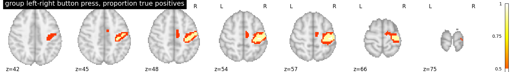
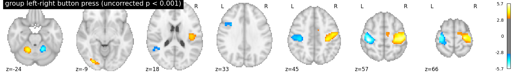

Note
Click here to download the full example code
2.3.1. Second-level fMRI model: true positive proportion in clusters¶
This script showcases the so-called “All resolution inference” procedure, in which the proportion of true discoveries in arbitrary clusters is estimated. The clusters can be defined from the input image, i.e. in a circular way, as the error control accounts for arbitrary cluster selection.
Rosenblatt JD, Finos L, Weeda WD, Solari A, Goeman JJ. All-Resolutions Inference for brain imaging. Neuroimage. 2018 Nov 1;181:786-796. doi: 10.1016/j.neuroimage.2018.07.060
2.3.1.1. Fetch dataset¶
We download a list of left vs right button press contrasts from a localizer dataset. Note that we fetch individual t-maps that represent the BOLD activity estimate divided by the uncertainty about this estimate.
from nilearn.datasets import fetch_localizer_contrasts
n_subjects = 16
data = fetch_localizer_contrasts(["left vs right button press"], n_subjects,
get_tmaps=True)
from nilearn import plotting
import matplotlib.pyplot as plt
Out:
Downloading data from https://osf.io/download/5d27ca3d1c5b4a001b9eeddb/ ...
Downloaded 239217 of 239217 bytes (100.0%, 0.0s remaining) ...done. (2 seconds, 0 min)
Downloading data from https://osf.io/download/5d27eba2114a420016059fbf/ ...
Downloaded 245380 of 245380 bytes (100.0%, 0.0s remaining) ...done. (2 seconds, 0 min)
Downloading data from https://osf.io/download/5d27f296114a42001704a5d9/ ...
Downloaded 236772 of 236772 bytes (100.0%, 0.0s remaining) ...done. (2 seconds, 0 min)
Downloading data from https://osf.io/download/5d280608a26b3400180868d1/ ...
Downloaded 242862 of 242862 bytes (100.0%, 0.0s remaining) ...done. (2 seconds, 0 min)
Downloading data from https://osf.io/download/5d2811d0114a42001704b988/ ...
Downloaded 244475 of 244475 bytes (100.0%, 0.0s remaining) ...done. (3 seconds, 0 min)
Downloading data from https://osf.io/download/5d281f851c5b4a001b9f2315/ ...
Downloaded 239378 of 239378 bytes (100.0%, 0.0s remaining) ...done. (2 seconds, 0 min)
Downloading data from https://osf.io/download/5d282d9045253a001c3e80a1/ ...
Downloaded 237243 of 237243 bytes (100.0%, 0.0s remaining) ...done. (2 seconds, 0 min)
Downloading data from https://osf.io/download/5d283ee0a26b34001609f58e/ ...
Downloaded 238935 of 238935 bytes (100.0%, 0.0s remaining) ...done. (2 seconds, 0 min)
Downloading data from https://osf.io/download/5d285263114a4200160602c6/ ...
Downloaded 241498 of 241498 bytes (100.0%, 0.0s remaining) ...done. (2 seconds, 0 min)
Downloading data from https://osf.io/download/5d285d61114a42001904a343/ ...
Downloaded 233151 of 233151 bytes (100.0%, 0.0s remaining) ...done. (2 seconds, 0 min)
Downloading data from https://osf.io/download/5d28709e114a420016061aa1/ ...
Downloaded 217977 of 217977 bytes (100.0%, 0.0s remaining) ...done. (2 seconds, 0 min)
Downloading data from https://osf.io/download/5d287b3a45253a00193d145e/ ...
Downloaded 229476 of 229476 bytes (100.0%, 0.0s remaining) ...done. (3 seconds, 0 min)
Downloading data from https://osf.io/download/5d28966345253a00193d2e27/ ...
Downloaded 227432 of 227432 bytes (100.0%, 0.0s remaining) ...done. (3 seconds, 0 min)
Downloading data from https://osf.io/download/5d28a431a26b340019090fa2/ ...
Downloaded 216248 of 216248 bytes (100.0%, 0.0s remaining) ...done. (2 seconds, 0 min)
Downloading data from https://osf.io/download/5d28b761a26b3400160a6ba8/ ...
Downloaded 237960 of 237960 bytes (100.0%, 0.0s remaining) ...done. (2 seconds, 0 min)
/home/emdupre/miniconda3/envs/nilearn/lib/python3.7/site-packages/numpy/lib/npyio.py:2372: VisibleDeprecationWarning: Reading unicode strings without specifying the encoding argument is deprecated. Set the encoding, use None for the system default.
output = genfromtxt(fname, **kwargs)
2.3.1.2. Estimate second level model¶
We define the input maps and the design matrix for the second level model and fit it.
import pandas as pd
second_level_input = data['cmaps']
design_matrix = pd.DataFrame([1] * len(second_level_input),
columns=['intercept'])
Model specification and fit
from nistats.second_level_model import SecondLevelModel
second_level_model = SecondLevelModel(smoothing_fwhm=8.0)
second_level_model = second_level_model.fit(second_level_input,
design_matrix=design_matrix)
To estimate the contrast is very simple. We can just provide the column name of the design matrix.
z_map = second_level_model.compute_contrast(output_type='z_score')
We threshold the second level contrast at uncorrected p < 0.001 and plot
from scipy.stats import norm
p_val = 0.001
p001_uncorrected = norm.isf(p_val)
from nistats.thresholding import cluster_level_inference
proportion_true_discoveries_img = cluster_level_inference(z_map, threshold=[3, 4, 5], alpha=.05)
plotting.plot_stat_map(
proportion_true_discoveries_img, threshold=0., colorbar=True, display_mode='z',
title='group left-right button press, proportion true positives', vmax=1)
plotting.plot_stat_map(
z_map, threshold=p001_uncorrected, colorbar=True, display_mode='z',
title='group left-right button press (uncorrected p < 0.001)')
plotting.show()
- 
- 
Total running time of the script: ( 0 minutes 39.321 seconds)